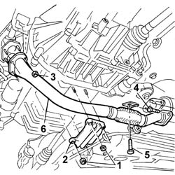
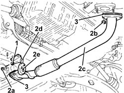
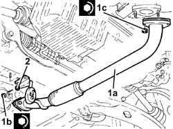

1076B50 exhaust pipe attachment to engine - r + r
- Path
- Procedures > 10 ENGINE > 1076 EXHAUST PIPES AND SILENCERS > 1076B EXHAUST PIPES AND SILENCERS > 1076B50 exhaust pipe attachment to engine - r + r
- Kind
- repair procedure (removal / refitting; the operation number is the code)
- Applies to
- all engines; all production periods
- Interactive page
- https://sloeber94.github.io/elrnDB-fDbl/en/#/2584470
Applies to: all engines; all production periods
 Removing
Removing
 Refitting
RefittingPosition the vehicle on a lift.
Raise the vehicle.
7055B54 under-engine guard - r r
1. Undo the retaining bolts on the reinforcing bracket on the oil sump.
2. Remove the reinforcement bracket.
3. Undo the nuts securing the exhaust pipe to the manifold.
4. Undo the bolts securing the pipe to the catalytic converter.
5. Undo the fixing bolt and release the rubber mounting, complete with bodyshell pin.
6. Remove the front exhaust pipe section.

Applies to: all engines; all production periods
Removing
RefittingPosition the vehicle on the ramp.
Proceed with the removal 7055B54 under-engine guard - r r .
1. Undo the nuts securing the exhaust pipe mount.
2. Undo nuts (2a) (2b) and remove the exhaust pipe attachment to the engine (2c) complete with mount (2d) and flexible mount (2e).
3. Remove the gaskets.

Applies to: all engines; all production periods
Refitting
RemovingFit the exhaust pipe gasket.
Fit the front section of the exhaust pipe.
Secure the pin to its rubber block.
Tighten the nuts securing the exhaust pipe to the catalytic converter.
 | Fastening | Component | Ø | Value (daNm) |
|---|---|---|---|---|
- | Nut | EXHAUST PIPE TO ENGINE | M8 | (catalytic converter) 3 |
Tighten the nuts securing the exhaust pipe to the manifold.
| Fastening | Component | Ø | Value (daNm) |
|---|---|---|---|---|
- | Bolt | EXHAUST PIPE TO ENGINE | M8 | (Exhaust manifold) 3 |
Tighten the nuts securing the reinforcement brackets to the studs on the oil sump.
7055B54 under-engine guard - r r
Lower the lift and remove the vehicle from the lift.
Applies to: all engines; all production periods
Working at the bench, separate the mount with flexible block from the exhaust pipe.
Applies to: all engines; all production periods
Refitting
RemovingFit the mount with flexible block to the exhaust pipe.
1. Refit the exhaust pipe attachment to the engine (1a) with gaskets and secure by tightening nuts (1b) and (1c) to the specified torque.
| Fastening | Component | Ø | Value (daNm) |
|---|---|---|---|---|
1b | Nut | EXHAUST PIPE TO ENGINE | M8 | (Catalytic converter side) 2.7 ÷ 3.3 |
| Fastening | Component | Ø | Value (daNm) |
|---|---|---|---|---|
1c | Nut | EXHAUST PIPE TO ENGINE | M8 | (Hose side) 2.7 ÷ 3.3 |
2. Tighten the exhaust pipe mount nuts.

Applies to: all engines; all production periods
Proceed with the refitting 7055B54 under-engine guard - r r .
Remove the car from the ramp.
Topics linked from this page (1)
Topics that link to this page (9)
- 1008C10 power unit upper reaction link r r
- 1020A20 crank case oil sump - r + r clean seals for sealant application
- 1020D14 front crank shaft oil seal cover - r + r and replace seals for versions with oil pump on crank shaft, timing side
- 1028H20 piston with connecting rod - r r
- 1032C43 timing belt tensioner mount - r r with timing belt removed
- 1084B26 emgine oil intake duct - r r
- 4130A10 power steering box - r+r - check tow-in if necessary separately - includes bleeding
- 4130A13 POWER ASSISTED STEERING BOX - R.R. - If necessary. check wheel toe in separately - Includes. bleeding air - on right hand drive versions
- 5530A10 alternator - r+r